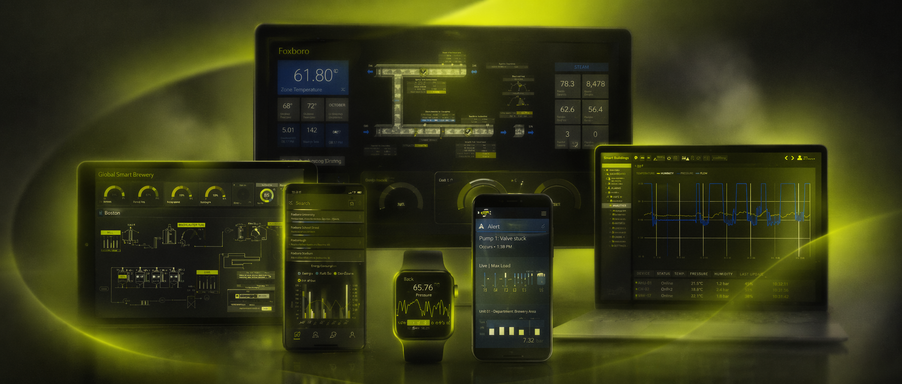

Vue rapide
Un projet sensible qui m'a appris a designer avec exigence, retenue et responsabilite.
Cette mission menee chez Fauche m'a confronte a un cadre tres particulier : un sujet soumis a de fortes regles de confidentialite, des contraintes techniques existantes et une exigence d'usage elevee. Le travail ne consistait pas a rendre l'interface spectaculaire, mais a simplifier sans appauvrir, pour aider des operateurs a superviser une installation avec une lecture plus immediate.
Ce que le projet raconte
Ma capacite a concevoir sous forte contrainte, dans un environnement sensible ou la clarte prime sur tout le reste.
Point fort
Donner une hierarchie nette a des ecrans de supervision denses, avec un droit a l'erreur tres faible.
Contexte
Stage a temps plein prolonge d'un mois pour poursuivre la mission apres des retours positifs sur le travail produit.
Brief
Superviser une installation dans un cadre defense, sans perdre la lecture de l'essentiel
Le projet portait sur une interface de supervision liee a la defense. L'objectif etait d'accompagner la lecture d'un environnement technique dense en aidant l'operateur a reperer rapidement les bons niveaux d'information : etats systeme, alertes, anomalies, capteurs, flux et mesures.
Sur ce type d'IHM, le design ne cherche pas a impressionner. Il doit avant tout reduire l'ambiguite, soutenir la prise de decision et respecter un cadre technique deja en partie existant. Le projet etait aussi marque par une confidentialite stricte, ce qui impose ici de rester volontairement sobre sur certains details.
01 · Objectif
Rendre l'information exploitable plus vite
L'interface devait permettre de superviser une installation avec une lecture directe des etats, des mesures et des signaux prioritaires.
02 · Cadre
Un environnement sensible et contraint
Le contexte defense impliquait rigueur, discretion et respect de contraintes metier et techniques qui limitaient naturellement certaines libertes UX/UI.
03 · Ma mission
Designer l'interface utile
Conception UI des ecrans de supervision, travail de hierarchie visuelle et prototypage sur un projet melant adaptation de l'existant et conception plus neuve.
Contraintes UX
Quand la lisibilite immediate devient la priorite absolue
Le coeur du projet etait la simplicite d'usage dans un contexte critique. Les ecrans devaient absorber une densite d'informations importante sans devenir confus. L'enjeu n'etait pas de reduire artificiellement le contenu, mais de le rendre plus lisible, mieux ordonne et plus actionnable.
Lisibilite immediate
Dans ce contexte, quelques secondes de flottement peuvent deja etre de trop. La lecture des informations devait etre plus directe, sans surcharge decorative ni ambiguite de niveau.
Interface dense mais simple
Les donnees critiques, les mesures et les anomalies devaient coexister dans une meme interface, avec une organisation plus claire et une meilleure priorisation visuelle.
Usage critique, faible droit a l'erreur
Les alertes et les anomalies devaient beneficier d'une hierarchie plus nette afin d'eviter les mauvaises interpretations et de soutenir une reaction adaptee.
Contraintes techniques et legacy
Le projet ne partait pas d'une feuille blanche. Il fallait composer avec de l'existant, comprendre les limites du systeme en place et produire vite, proprement, sans casser la logique metier.
Process
Observer, simplifier, prototyper
Cette mission m'a appris a avancer avec methode dans un cadre contraint. Le travail a surtout porte sur la qualite de lecture des interfaces et sur la maniere d'organiser les informations pour qu'elles soient comprises plus vite, avec moins d'hesitation.
01
Prise en main d'un contexte sensible
Comprendre un sujet soumis a la confidentialite, integrer les contraintes d'un environnement defense et identifier ce qu'il etait possible d'ameliorer sans sortir du cadre impose.
02
Lecture de l'existant et besoins operateur
Analyser les ecrans existants, reperer les zones de confusion et mieux hierarchiser les informations critiques pour faciliter la supervision de l'installation.
03
Travail de hierarchie visuelle
Reorganiser la presence des alertes, des mesures et des etats systeme afin de clarifier les niveaux de lecture et de reduire la charge cognitive dans un usage dense.
04
Prototypage et iteration rapide
Produire des propositions exploitables rapidement, affiner les ecrans et ajuster les arbitrages entre lisibilite, contraintes techniques et attentes metier.
05
Confiance gagnee sur la suite
Le stage a ete prolonge d'un mois pour poursuivre la mission, un signal discret mais fort sur la qualite et la pertinence du travail realise dans un contexte exigeant.
Direction IHM
Une interface plus lisible, sans surdesign ni perte d'information
Ce type de projet rappelle une chose essentielle : la bonne UI n'est pas celle qui attire l'oeil, mais celle qui aide a agir. La direction IHM a donc cherche un equilibre entre densite, clarte et robustesse, avec une attention particuliere a la lecture des etats systeme, a la visibilite des alertes et a la coherence globale des ecrans.
Le visuel partage ici reste volontairement generique. Il sert surtout a poser l'ambiance du projet sans exposer d'elements confidentiels, ce qui est coherent avec la nature sensible du sujet.

Principe 01
Prioriser ce qui compte
Faire ressortir les informations utiles au bon moment, sans mettre tous les elements au meme niveau visuel.
Principe 02
Simplifier sans masquer
Garder la richesse de donnees necessaire a la supervision, mais avec une structure plus claire et plus stable.
Principe 03
Designer pour l'usage reel
Produire des ecrans credibles dans leur contexte d'exploitation, au service d'operateurs et non d'une demonstration graphique.
Resultat
Une premiere experience forte sur les interfaces critiques
Ce projet reste important dans mon parcours parce qu'il m'a appris a travailler serieusement tres tot sur un sujet ultra sensible, avec une vraie exigence de clarte, de retenue et d'efficacite. Il montre aussi ma capacite a comprendre vite un cadre metier contraint et a produire une reponse adaptee, sans chercher a faire plus que ce que le contexte autorise.
2019
Mission menee de mai a juillet chez Fauche
IHM
UI supervision, hierarchie visuelle et prototypage
Critique
Reponse adaptee a un environnement a faible droit a l'erreur